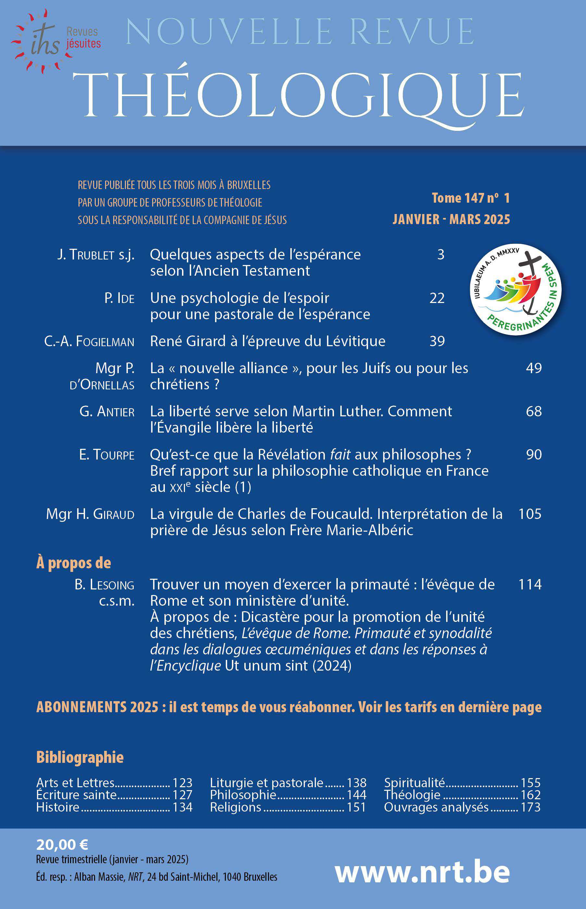

Cet article vous est offert gracieusement.
p. 49 - 67
https://www.nrt.be/fr/articles/la-nouvelle-alliance-pour-les-juifs-ou-pour-les-chretiens-3954
Tous droits réservés. © Nouvelle revue théologique 2026

NRT 147 (2025) 49-67 Mgr P. d’Ornellas
En réfléchissant sur l’antisémitisme1, il apparaît que la « substitu- tion » en est sans doute la plus subtile forme. Une compréhension correcte de la « nouvelle alliance » permet de lutter efficacement contre cette « substitution » en engageant une fraternité authentique entre Juifs et chrétiens, habités les uns et les autres par l’espérance qui illumine et traverse l’histoire.
I. — La « substitution »
L’antisémitisme est un mouvement de pensée toujours renaissant au long des siècles. Il se pare successivement de raisons d’être diverses qui voudraient le justifier. Plus grave encore, selon les circonstances historiques, il se revêt d’habits nouveaux pour laisser croire qu’il s’agit de justice. Pourtant l’antisémitisme est un piège, un aveuglement, une source de violences. Il est dramatique. Selon Hannah Arendt, il est « un problème qui menace gravement notre sens de la mesure et notre désir d’être sains d’esprit2 ». Avec l’antisémitisme, il n’y a pas d’huma- nisme authentique qui soit possible et qui suscite la vraie possibilité pour les êtres humains de vivre ensemble. L’antisémitisme permet de déchiffrer tout antihumanisme. Dénier aux Juifs le droit de vivre comme juif, c’est leur dénier le droit à partager notre humanité. C’est ouvrir la porte au refus de l’autre comme être humain tout simple- ment parce qu’on lui dénierait sa particularité spécifique qui lui est essentielle pour vivre. Les historiens mettent en lumière les habits divers dont l’antisémi- tisme s’est revêtu au long de l’histoire, et tentent d’en discerner les motifs. S’interroger sur l’antisémitisme, c’est questionner les
50 P. D’ORNELLAS
arguments qui servent de paravents au refus du Juif. Quels que soient ses motifs, ce refus porte sur l’identité juive jugée comme menaçante face à d’autres identités qui veulent s’imposer. Le débat sur la reven- dication identitaire percute de plein fouet l’identité juive qui, loin de se revendiquer comme fermée, s’affirme par elle-même. Même avec l’assimilation, elle demeure et se trouve insupportable à toute volonté identitaire excluante. De fait, l’injonction juive inhérente au Juif pour exister en tant que juif, quelle que soit la manière dont elle s’affirme, fait peur à toute revendication identitaire fermée sur elle-même. L’an- tisémitisme en vient alors à légitimer cette revendication3. Dans la variété des manières juives de se considérer comme juif, il est un point commun aux Juifs: l’identité juive est source d’une continuelle méditation qui, sans cesse réfléchie, produit le « judaïsme ». Considéré comme un courant de vie et de culture dans l’histoire ou comme une tradition religieuse, il est porteur de valeurs pour le bien de l’humanité. La diversité4 des explications ou des questionnements que les Juifs ne cessent d’élaborer pour comprendre leur condition singulière où se croisent inexorablement le religieux et le culturel, manifeste une raison d’être du Peuple juif, qui lui est spécifique.
1. L’élection d’Israël, antidote à l’antisémitisme
Le croyant en Dieu reçoit l’élection d’Israël comme la donnée pri- mordiale qui rend raison du « judaïsme » et de sa pérennité. Avoir de la « considération5 » pour cette élection, c’est bannir à jamais
« LA NOUVELLE ALLIANCE » 51
l’antisémitisme. Entretenir une telle « considération », c’est garantir que l’antisémitisme ne renaîtra pas, c’est trouver les raisons fonda- mentales de s’opposer au refus du Juif en tant que juif. C’est aussi donner sens à l’histoire de nos libertés et de nos liens sociaux, et démasquer les turpitudes de l’autoritarisme dont la tentation est tou- jours présente. C’est pourquoi, il est juste d’évoquer l’élection d’Israël comme anti- dote à l’antisémitisme. Cela demande cependant réflexion car l’évo- cation de l’élection peut au contraire susciter le pire des antisémi- tismes. La substitution de l’élection d’Israël par une autre élection en faveur d’un autre groupe, quel qu’il soit, est la plus sournoise forme de l’antisémitisme. Celui-ci prend prétexte de l’élection d’Israël pour affirmer, par jalousie ou mimétisme, qu’il existe une autre élection. Celle-ci devient vite la rivale cruelle de celle du peuple d’Israël. Cette autre élection, qu’elle soit religieuse ou païenne, instaure un travesti de Dieu pour la justifier. Ce travestissement est en quelque sorte une paganisation du « Dieu d’Israël » en récupérant son alliance selon des logiques humaines. La substitution chrétienne est de fait une paganisation du Messie d’Israël en le déconnectant de l’alliance faite avec le Peuple juif, ce qui a fait dire au cardinal Lustiger que les chrétiens qui en sont les artisans sont des « pagano-chrétiens6 ». Pour réfléchir sur l’élection d’Israël comme antidote absolu à cette substitution, je m’appuierai sur une étude du Frère Pierre Lenhardt, parue dans À l’écoute d’Israël, en Église7. Consacrée au renouvellement dans la Tradition juive, cette étude ouvre vers une fraternité toujours plus ajustée entre chrétiens et Juifs. En nous mettant à « l’écoute d’Israël », nous suivons les « Orientations et suggestions » du Saint- Siège données en 1974, qui invitaient les chrétiens à apprendre « par quels traits essentiels les Juifs se définissent eux-mêmes8 ».
52 P.D’ORNELLAS
2. Un antijudaïsme chrétien absurde
Au cours des siècles de l’histoire chrétienne, on a vu l’antisémitisme se revêtir de l’habit chrétien et devenir un antijudaïsme9. Il est sur- prenant que cela ait pu exister puisque la condamnation de l’hérésie de Marcion († 160) fut immédiate, nette et explicite. Benoît xvi, pape émérite, l’a précisé:
L’Église de Rome, dès le deuxième siècle, a dit clairement, avec le rejet de la position de Marcion, que les chrétiens et les juifs adorent le même Dieu, et que les livres saints d’Israël sont aussi des livres saints de la chrétienté. La foi d’Abraham est aussi la foi des chrétiens. Abraham est aussi pour eux « le père dans la foi »10.
Avant Benoît xvi, Jean-Paul ii a souligné que, face à l’hérésie du marcionisme, « l’Église avait réagi aussitôt avec vigueur, dans la conscience de son lien vital avec l’Ancien Testament, sans lequel le Nouveau Testament lui-même est vidé de son sens11 ». Cette réaction du Magistère de l’Église s’est maintenue: « L’Église a toujours vigou- reusement repoussé l’idée de rejeter l’Ancien Testament sous prétexte que le Nouveau Testament l’aurait rendu caduc (Marcionisme)12. » Il est donc étonnant qu’après cette condamnation vigoureuse, immédiate et constante de l’hérésie de Marcion, l’antisémitisme ait revêtu l’habit chrétien de la substitution en raison, par exemple, d’une interprétation exclusivement allégorique de l’Ancien Testament13. Tout l’enjeu est de découvrir le « sens14 » des textes sacrés divinement inspirés de l’Ancien Testament à la lumière de la Tradition d’Israël dans laquelle s’inscrit délibérément Jésus. En effet, le « lien vital » qui unit le Nouveau Testament à la Tradi- tion d’Israël apparaît aujourd’hui évident. Pierre Lenhardt, grâce à sa connaissance approfondie de la Tradition juive, l’atteste de façon
« LA NOUVELLE ALLIANCE » 53
limpide: « Il paraît clair en effet que le Nouveau Testament est un recueil de traditions juives qui parlent, consciemment ou non, la langue de la Torah orale des pharisiens15. » Comment en serait-il autrement puisque Jésus appartient au Peuple d’Israël? Pour grandir « en sagesse, en taille et en grâce » (Lc 2,52), il a dû entrer en « terre d’Israël » (Mt 2,21). Il est juif, circoncis (Lc 2,21), habité par la mentalité juive et formé à la lecture juive des Écritures d’Israël, en particulier, si on en juge par les Évangiles, selon la tradition des Pharisiens. Les rédacteurs du Nouveau Testament sont tous du monde juif et sont eux aussi marqués par la manière juive de lire les Écritures d’Israël. Ils savent que leur « maître » dont ils sont les « disciples » (cf. Mt 9,11) est juif. C’est de leur « maître » qu’ils ont reçu l’interprétation de la Torah, qu’ils nous ont transmise. Malgré cette évidence, l’antisémitisme a prospéré sur fond de subs- titution16. Il n’est pas absent de certains courants actuels du christia- nisme qui ne perçoivent pas à quel point « le Nouveau Testament lui-même est vidé de son sens » si on ne recourt pas aux Écritures d’Israël ni à leur lecture juive pour le comprendre. On sait à quelle grave bévue a conduit la séparation entre « le Jésus de l’histoire » et « le Christ de la foi ». Si la judéité de Jésus apparaît bien comme un fait historique qu’il est difficile de contester, cela n’aurait cependant aucune incidence sur le Christ auquel la foi chrétienne adhère. De là à ce que celle-ci rende sinon inutile du moins caduque la foi juive, il n’y a qu’un pas que les acteurs chrétiens – les « pagano-chrétiens » – de cette séparation entre l’histoire et la foi franchissent, parfois hélas sans s’en rendre compte! Il est possible d’espérer que le 1700e anniversaire du Concile de Nicée soit une occasion d’approfondir le Credo de l’Église en ayant de la « considération » pour Jésus: s’il « s’est fait homme », il s’est fait juif; s’il est « né de la Vierge Marie », alors il est fils d’Israël. Aussi Jésus en sa vie, son enseignement et sa mort est-il intrinsèquement lié à l’amour d’Israël pour la Torah (Mt 5,19), au Shema Israël (Mt 22,37), à l’alliance du Dieu d’Abraham, d’Isaac et de Jacob (Mt 8,11), et à son amour indéfectible et miséricordieux pour Israël (Mt 15,24). C’est d’ailleurs de la confiance des prophètes en la fidélité du « Dieu d’Israël » que le nom « Christ », qui est accolé à Jésus, tire tout son sens (cf. Jn 4,25). Il est donc impossible de croire en lui sans se
54 P. D’ORNELLAS
laisser illuminer par la foi du Peuple d’Israël qui confesse que son Seigneur a scellé avec lui une alliance irrévocable. Sans doute est-il bon de penser au Jubilé ordinaire de l’Incarnation en 2025 (qui contient l’anniversaire du Concile de Nicée), comme un moment favorable pour « considérer » le lien qui relie Jésus et Israël, son peuple.
II. — L’alliance éternelle
Il y a vingt-cinq ans, pour préparer le Jubilé de l’an 2000, un col- loque sur « les racines de l’antijudaïsme en milieu chrétien » s’est tenu à Rome. Jean-Paul ii y a exprimé la conviction de foi de l’Église sur le Peuple juif: « À l’origine de ce petit peuple situé entre de grands empires de religion païenne qui l’emportent sur lui par l’éclat de leur culture, il y a le fait de l’élection divine. Ce peuple est convoqué et conduit par Dieu, Créateur du ciel et de la terre. Son existence n’est donc pas un pur fait de nature ni de culture, au sens où par la culture l’homme déploie les ressources de sa propre nature. Elle est un fait surnaturel17. » Ceci explique que l’on puisse évoquer le « mystère de l’élection », non pas comme si l’élection d’Israël était une réalité incompréhen- sible – mystérique – qui relèverait d’une sorte d’occultisme réservant ses secrets à des initiés, mais plutôt comme un don à recevoir de l’Éternel. En effet, Jean-Paul ii continue: « Ce peuple persévère envers et contre tout du fait qu’il est le peuple de l’alliance et que, malgré les infidélités des hommes, le Seigneur est fidèle à son alliance. »
1. L’Église et l’alliance
À ce propos tenu en 1993 par le Pape polonais, il convient d’ajou- ter celui que Benoît xvi adressa quinze ans plus tard à Paris aux représentants de la Communauté juive, le 12 septembre 2008:
Par sa nature même, l’Église catholique désire respecter l’alliance conclue par le Dieu d’Abraham, d’Isaac et de Jacob. Elle s’inscrit, elle aussi, dans l’alliance éternelle du Tout-Puissant dont les desseins sont sans repentance, et elle respecte les fils de la Promesse, les fils de l’alliance, ses frères aimés dans la foi. Elle redit avec force par ma voix les paroles du grand pape Pie xi, mon vénéré prédécesseur: « Spirituellement, nous sommes des
« LA NOUVELLE ALLIANCE » 55
sémites18 ». Ainsi, l’Église s’élève contre toute forme d’antisémitisme dont aucune justification théologique n’est recevable19. Le théologien Henri de Lubac a compris qu’être antisémite était aussi être antichrétien20.
L’Église ne se comprend donc qu’en lien, qui lui est intrinsèque, avec l’alliance éternelle du Tout-Puissant. Pour les chrétiens, membres de l’Église, il est donc vital de comprendre l’alliance que Dieu a scel- lée avec son Peuple. Cette compréhension est inséparable d’une juste « considération » pour l’élection d’Israël.
2. L’unique alliance éternelle
Dans le propos précédemment cité, Jean-Paul ii évoque la persévé- rance du Peuple juif. Celle-ci s’atteste par la permanence avec laquelle ce Peuple pratique la lecture des Écritures. Effectivement, remarque Jean-Paul ii, « les Écritures sont inséparables du peuple et de son histoire ». Or, que disent les Écritures d’Israël? Un regard rapide découvre que l’alliance est éternelle avec Abraham (Gn 17,7.13). Il s’agit de « son alliance, parole édictée pour mille générations: promesse faite à Abra- ham, garantie par serment à Isaac, érigée en loi avec Jacob, alliance éternelle pour Israël » (1 Ch 16,15-17). Cette « alliance éternelle » scellée par Dieu a été « rompue », dit le prophète (Is 24,5). Mais Dieu « se souvient » de son alliance qu’il renouvelle en raison de sa fidélité et de sa miséricorde (Ez 16,60; Ps 105,8; 106,45). Elle est « alliance éternelle pour Israël ». Les prophètes annoncent l’alliance éternelle (Is 55,3; 61,8), qui s’actualise à chacune des étapes de l’histoire d’Israël. Dans ce sens, saint Paul parlera des « alliances » en Israël (cf. Rm 9,4). « Les alliances successives sont en réalité des accomplis- sements progressifs de la seule et même alliance », affirme Pierre Len- hardt21. Dieu en se souvenant de son alliance éternelle, la fait réson-
56 P. D’ORNELLAS
ner dans l’« aujourd’hui » d’Israël comme un appel à observer intégralement les commandements (Dt 30,1-11; Ps 95,7). Cette unique alliance sera nommée « alliance sainte » (Dn 11,30) en réfé- rence à Abraham (Lc 1,72). Pierre Lenhardt précise comment la Tradition juive reçoit les Écri- tures:
Selon le principe « il n’y a pas d’avant et d’après dans la Torah », on sait que l’ordre dans lequel la Torah présente les choses est pédagogique et laisse la place à toutes sortes d’interprétations. Parmi ces interprétations, les Sages d’Israël ont reçu comme privilégiée celle qui place au centre de tout, l’alliance du Sinaï. L’alliance du Sinaï est liée à l’élection d’Israël; elle est conclue par le don de la Torah à Israël et par l’acceptation de ce don par Israël; l’alliance se réalise par la pratique des commandements prescrits par Dieu pour la sanctification d’Israël22.
Cependant, « c’est dans cette alliance qu’a été donnée la Torah de Moïse qui mentionne et confirme toutes les alliances antérieures et qui pointe vers l’alliance eschatologique23 ». Recevoir l’alliance du Sinaï, c’est comprendre qu’elle a en elle-même un déploiement vers une « alliance eschatologique », en vertu même de la promesse faite à Abraham. Pour le dire autrement, cette « alliance eschatologique » ne fait pas abstraction de l’alliance du Sinaï qui confirme l’alliance faite avec Abraham, elle lui est intrinsèquement liée. Celle-ci « pointe », selon l’expression de Pierre Lenhardt, vers l’alliance eschatologique non pas parce que quelque chose lui serait surajouté, mais parce que ce déploiement est inscrit dans ce que Dieu a donné au Sinaï et, en amont, dans ce qu’il a promis à Abraham. Posons ici que cette « alliance eschatologique » est l’« alliance nou- velle » annoncée par Jérémie (31,31). La Tradition juive le manifeste clairement.
III. — La « nouvelle alliance »
Dès lors, nous devons nous interroger sur la signification de cette « nouvelle alliance »: comment est-elle nouvelle sans rendre caduque l’alliance du Sinaï ni la reléguer dans l’oubli ou en en diminuant la valeur? Et quelle est donc la nouveauté de cette alliance si l’on se souvient que l’alliance est « éternelle » dès le principe? Le Comité
« LA NOUVELLE ALLIANCE » 57
épiscopal français pour les relations avec le judaïsme a précisé ceci: « La nouveauté ne réside pas dans une correction ou un remaniement impensable de l’initiative première, mais dans la reprise et la pour- suite du même dessein divin24. » Ici, le regard de Pierre Lenhardt est précieux. Il s’agit de « la nou- veauté [qui] apparaît sur un fond de continuité. C’est la novation, rénovation ou renouvellement de la Torah qui manifeste que cette Torah est vivante25. » « Le nouveau, référé à Dieu, reçoit de Dieu une force qui renouvelle l’homme qui reçoit le nouveau26. » En effet, « le critère du bon hiddush est qu’il puisse être référé à Dieu ou à Moïse, c’est la même chose, en fonction d’une cohérence dont la commu- nauté, représentée par les Sages, est juge27. » Cette cohérence est « immémoriale », écrit Pierre Lenhardt, au sens où, selon la Tradition juive, elle provient de l’alliance du Sinaï. Enfin, il s’agit d’un « ensei- gnement nouveau » qui doit être « susceptible d’être accepté comme enseignement commun28 ». C’est déjà une limite à la nouveauté: il faut qu’elle soit reçue par ceux qui représentent la communauté, à savoir les Sages, qui discernent que cet enseignement est valable pour tous dans la communauté. Ce renouvellement est reconnu, précise Pierre Lenhardt, « comme expression légitime de ce qui existait déjà anciennement mais qui était resté caché29 ». La nouveauté n’est donc pas une « création absolue » présentée avec « arrogance »; elle « ne signifie pas établir une réalité totalement nouvelle, inconnue auparavant ». Au contraire, elle « est apportée à la communauté à partir de la relation maître-disciple, avec humilité30 ». Comment ne pas penser ici à ce « Maître » qui a transmis son interprétation de la Torah à ses disciples quand il affirme: « Apprenez de moi que je suis doux et humble de cœur. » (Mt 11,29) Cette pre- mière affirmation où Jésus parle de lui-même dans les quatre Évan- giles, interpelle saint Augustin. L’évêque d’Hippone s’émerveille en effet que le « Maître », « si grand qu’il soit », parle de lui-même en
58 P. D’ORNELLAS
n’affirmant pas qu’il va « construire le monde » ni « ressusciter les morts », mais en dévoilant son humilité31. L’humble est celui qui reçoit « tout » de Dieu (Mt 11,27). L’humilité lui donne en quelque sorte « autorité » pour transmettre « un enseignement nouveau » (Mc 1,27), qui est « caché » dans l’ancien (Mc 4,22). Cette humilité rappelle celle de Moïse (Nb 12,3) qui reçut la Torah et l’a transmise. L’évocation de Moïse nous invite à lire le midrash que cite Pierre Lenhardt et qui, précise-t-il, daterait de 250 de notre ère:
Que signifie ce qui est écrit (Dt 9,10): Le Seigneur m’a donné les deux tables de pierre, écrites du doigt de Dieu, conformes à toutes les paroles qu’il vous a dites du milieu du feu sur la montagne. Ceci enseigne que le Saint, béni soit- Il, a montré à Moïse toutes les explicitations de la Torah et toutes les expli- citations des Scribes et tout ce que les Scribes seraient amenés à renouveler dans l’avenir32.
Pierre Lenhardt commente:
Il s’agit bien de tous les hiddushim que la Torah orale amène aussi bien pour l’interprétation de l’Écriture que pour celle de la Tradition. On ne saurait être plus hardi pour légitimer le hiddush. Il s’agit évidemment du bon hiddush, c’est-à-dire de celui qui n’abolit pas l’ancien, mais l’accom- plit.
1. Une alliance jamais violée
Maintenant, nous pouvons tenter de comprendre la « nouvelle alliance » annoncée par le prophète Jérémie. Quel est donc ce renou- vellement qui sera apporté avec humilité à la communauté? Pierre Lenhardt lit alors un midrash sur Lv 26,9: « Je me tournerai vers vous, je vous ferai fructifier, je vous multiplierai et je maintiendrai mon alliance avec vous. » Ce midrash sur Lv 26,9 fait référence à Jr 31,31. Il vient d’une « tradition anonyme, commune, autorisée, ancienne, probablement antérieure à la destruction du deuxième Temple33 ». Si elle est anonyme et commune, cela veut dire qu’elle est reçue habituellement et qu’elle est donc ancienne. Ce midrash est d’autant plus important que la mention de Jr 31,31 semble rare34.
« LA NOUVELLE ALLIANCE » 59
Voici ce midrash :
Et je me tournerai vers vous. On a fait une parabole (pour montrer) à quoi la chose ressemble. (La chose ressemble) à un roi qui avait engagé de nom- breux ouvriers. Il y avait là un ouvrier qui avait fait pour lui de l’ouvrage pendant de nombreux jours. Les ouvriers entrèrent (auprès du roi) pour prendre leur salaire et cet ouvrier entra avec eux. Le roi dit à cet ouvrier: « Mon fils, je me rendrai libre pour toi ». Ceux-ci, qui sont nombreux, ont fait pour moi peu d’ouvrage et moi je leur donne un salaire peu élevé. Mais pour toi je ferai dans l’avenir un compte important.
Vient alors le commentaire de cette parabole inclus dans le midrash.
Ainsi en est-il pour Israël. Dans ce monde-ci ils demandent leur salaire au Dieu et les nations du monde demandent leur salaire. Et Dieu dit à Israël: « Mes fils, je me rendrai libre pour vous. Ces nations du monde ont fait pour moi peu d’ouvrage et moi je leur donne un salaire peu élevé. Quant à vous, cependant, je ferai dans l’avenir pour vous un compte important. » C’est pourquoi il est dit: Et je me tournerai vers vous: avec du bien. Et je vous ferai croître : par une féconde propagation. Et je vous ferai multiplier : par une taille redressée. Et j’accomplirai mon alliance avec vous: non pas comme la première alliance, que vous avez violée, comme il est dit (Jr 31,32): (non pas comme l’alliance que j’ai conclue avec leurs pères… mon alliance)qu’eux-mêmes ont rompue, etc, mais une alliance nouvelle qui désormais ne sera plus violée, comme il est dit (Jr31,31): Voici venir des jours oracle du Seigneur, où je conclurai avec la maison d’Israël et avec la maison de Judah une alliance nouvelle35.
Avec ce midrash sur Lv 26,9, Pierre Lenhardt explique que « le renouvellement présenté ici, n’est pas une création à partir du néant.
60 P. D’ORNELLAS
L’alliance de Jérémie est le maintien-accomplissement biblique de la ‘‘première alliance’’, de l’alliance antérieure, de ‘‘mon alliance’’ (Lv 26,9) ». Il n’est pas non plus « l’abolition des commandements. Au contraire, il est l’accomplissement de l’ancienne alliance par le fait que désormais Israël ne violera plus l’alliance par la non-observance des commandements ». C’est donc bien l’observance des commande- ments, inséparables de l’alliance, qui est ici appelée par Jr 31,31. Pour parler positivement de ce hiddush, Pierre Lenhardt précise qu’« il consiste sans doute ‘‘essentiellement dans le fait que l’alliance ne sera plus violée’’. » En effet, « c’est dit explicitement: ‘‘une alliance nouvelle qui désormais ne sera plus violée’’36 ». Il précise:
Il y a là un changement qualitatif qui permet de parler d’une nouveauté inouïe. A-t-on jamais vu, et peut-on concevoir, que tout le peuple, et cha- cun dans le peuple, ne violera plus l’alliance? Il y a là un changement, une nouveauté radicale, qui ne peuvent venir que de Dieu. Comment et quand un tel renouvellement sera-t-il opéré par Dieu?
Voilà la nouveauté: l’alliance éternelle du Tout-Puissant ne sera plus jamais violée par les hommes! Cela n’est possible que par un changement: la loi sera « inscrite sur » le « cœur » de l’homme par Dieu lui-même (Jr 31,33). Telle est l’action divine qui produit cette nouveauté anthropologique.
2. Quand adviendra cette nouveauté?
Comme vient de le signaler Pierre Lenhardt, l’annonce de la « nou- velle alliance » pose une grande question: comment et quand pou- vons-nous passer de notre histoire où l’alliance est violée à la nou- veauté radicale d’un temps où l’alliance ne serait pas violée? À ce sujet, Pierre Lenhardt expose deux midrashim sur Qohèleth. Tout d’abord, un midrash anonyme sur Qo 11,8: « La Torah qu’un homme apprend dans ce monde-ci est vanité, comparée avec la Torah du Messie37. » L’autre midrash porte surQo2,1:
Toute la Torah que tu apprends dans ce monde-ci est vanité, comparée avec la Torah qui sera dans le monde à venir, car dans ce monde-ci un homme apprend la Torah et oublie, mais pour l’avenir qui vient qu’est-il écrit? (Jr 31,33): Je mettrai ma Torah au fond de leur être.38
« LA NOUVELLE ALLIANCE » 61
Voici qu’il y a une hésitation entre le premier midrash qui parle de la « Torah du Messie » et donc des temps messianiques qui viendront après « ce monde-ci », et le deuxième midrash qui évoque « la Torah qui sera dans le monde à venir », sans préciser qu’il s’agit du temps messianique. Cette hésitation n’est qu’apparente car la prière juive relie le « monde à venir » au « Messie39 ». Ce « monde à venir » sera donc le temps messianique, lequel pourra exister sans que l’alliance soit violée parce que « Je (Dieu) mettra sa Torah au fond de leur être », dans le cœur de la Maison d’Israël. Le deuxième midrash sur Qo 2,1 précise que l’alliance ne sera pas violée dans le « monde à venir ». Nous devons donc tenir que l’« alliance nouvelle » est promise au Peuple juif en étant l’alliance eschatologique dans le « monde à venir » qui, selon la prière juive, est lié au « Messie ». Le Comité épiscopal français pour les relations avec le judaïsme le souligne: « Du point de vue de la foi chrétienne, l’alliance est nouvelle aussi pour le peuple d’Israël, appelé depuis l’ori- gine à un renouvellement eschatologique40. » Telle est la perspective qui se dégage en écoutant la Tradition juive. En donnant la signification de l’alliance nouvelle en Jr 31,31, cette Tradition renvoie à la nouveauté des temps messianiques, ou à celle du « monde à venir » qui est lié au Messie. Cela rend manifeste la pertinence de la question: quand cette nouveauté inouïe adviendra- t-elle? Pour nous, chrétiens, cette question est fondamentale puisque que nous affirmons que « l’économie chrétienne [est] l’alliance nou- velle et définitive41 ».
3. Jésus, Messie
En effet, les chrétiens professent que Jésus, par sa résurrection d’entre les morts, est pleinement établi comme Messie et ouvre le temps messianique où, comme le dit le midrash surQo 11,8, l’al- liance ne sera plus violée. Or, nous constatons que l’alliance ne cesse pas d’être violée en ce temps de l’histoire que nous, chrétiens, nous nommons « messianique ». En ce temps-là, les chrétiens entendent un appel à se convertir « car le Royaume des Cieux est tout proche » (cf. Mt 4,17). Cette conversion est d’autant plus impérative qu’ils
62 P. D’ORNELLAS
reçoivent la « Torah du Messie », celle que Jésus leur donne autant par son enseignement que par sa vie et sa mort sur la Croix. Ce don est aussi pardon offert pour toutes les violations de l’alliance, comme le précise l’annonce de la « nouvelle alliance » (cf. Jr 31,34). Ainsi, nous sommes en mesure de méditer sur la grande affirmation de Jérémie – unique dans toutes les Écritures d’Israël – concernant l’« alliance nouvelle ». Que veut dire le Juif Jésus quand il affirme: « Je vous donne un commandement nouveau » (Jn 13,34)? Quelle est donc cette nouveauté alors même que ce commandement est « ancien » (1 Jn 2,7)? Quelle est la « Torah du Messie » qu’il apporte comme un « enseignement nouveau » (Mc 1,27), lui qui proclame: « Amen, je vous le dis: Avant que le ciel et la terre disparaissent, pas un seul iota, pas un seul trait ne disparaîtra de la Loi jusqu’à ce que tout se réalise. » (Mt 5,18)? Par ce propos, Jésus ne montre-t-il pas qu’il adhère à la Tradition juive sur Qo 2,1 qui évoque le « monde à venir », ce monde où la terre et le ciel auront disparu au profit « des cieux nouveaux et de la terre nouvelle » que Dieu va « créer » (cf. Is 65,17; Ap 21,1)? D’ailleurs, en Marc, Jésus évoque lui-même le « monde à venir » (Mc 10,30), qui résonne avec « le renouvelle- ment [de toutes choses]42 » qu’il mentionne dans la péricope parallèle en Matthieu (Mt 19,28). Cette nouveauté a une caractéristique sur laquelle a insisté Pierre Lenhardt: elle vient de Dieu qui la « crée »! Dieu est l’auteur de ce « renouvellement [de toutes choses] », qui, en étant reçu par les Sages, est un bien commun du Peuple. Il s’agit bien d’une action divine qui transforme radicalement le cœur humain en un « cœur nouveau » (Ez 36,26), qui « crée » le « cœur pur » (cf. Ps 50,12), de telle sorte que cette nouveauté, discernée par la Tradition juive et recueillie par les Sages, soit un bien commun. Mais le bien commun de qui? Des chrétiens? Des Juifs? Ou le bien commun des chrétiens et des Juifs ensemble? Nous sommes mis devant une alternative qui mériterait d’être scru- tée dans les Écritures du Nouveau Testament à la lumière de la Tra- dition juive: comment les chrétiens reçoivent-ils cette annonce de Jérémie sur l’« alliance nouvelle » en pensant que cette nouveauté consiste, selon la Tradition juive reprise par Jésus, dans le fait que l’alliance ne sera plus jamais violée par le Peuple de Dieu dans le
« LA NOUVELLE ALLIANCE » 63
« monde à venir »? Dès lors, comment comprendre la vérité des temps messianiques inaugurés par la résurrection du Christ alors que nous constatons que l’alliance est violée par les chrétiens eux-mêmes, si, selon la Tradition juive, la nouveauté réside dans la non-violation de l’alliance? Les Évangiles attestent la pertinence de cette interrogation. Puisque Jésus affirme qu’il est le Messie (Mc 14,62; Jn 4,26), il inaugure en vérité le temps messianique. Mais il caractérise ce temps comme celui où poussent ensemble le bon grain et l’ivraie (Mt 13,31) jusqu’à la « moisson » à la « fin du monde » (Mt 13,40). Ce sera en même temps le « renouvellement [de toutes choses] » – c’est-à-dire la « nou- velle création » –, et l’avènement du « monde à venir ». Ainsi, pour les chrétiens, le Messie est venu avec sa Torah et l’a écrite dans le cœur de « son » Église (cf. Mt 16,16). Être membre de cette Église de Jésus, c’est recevoir son appel à la conversion pour accomplir toute la loi dont le commandement est « saint, juste et bon » (Rm 7,12). En effet, l’Église est sainte en vertu de son fondateur qui seul est saint (cf. Ap 15,4). Elle est le « corps du Christ »; ressuscité, il l’aime, l’habite et l’édifie dans la force de l’Esprit Saint, « âme » de l’Église43. De fait, en Jésus, l’éternelle alliance n’est pas violée: « Qui me convaincra de péché? » (Jn 8,46); « En observant les commande- ments de mon Père, je demeure dans son amour » (Jn 15,10). Il est reconnu comme « le saint de Dieu » (Lc 4,34). En Jésus, la nouvelle alliance est réalisée. En lui et par lui, le Royaume a fait irruption dans l’histoire (cf. Lc 17,21). Les chrétiens y ont accès grâce au Baptême et à l’Eucharistie: « Cette coupe est la nouvelle alliance en mon sang versé pour vous. » (Lc 22,20) En y participant, ils « annoncent la mort du Seigneur, jusqu’à ce qu’il vienne » (1 Co 11,26). Quand il viendra, le Seigneur posera son acte souverain qui, selon la tradition juive, sera tel que l’alliance ne sera plus jamais violée. Cette venue coïncidera avec le « jour du Messie » auquel l’apôtre Paul pense (Ph 2,16). Ainsi se réalisera la promesse de la « nouvelle alliance » pour le Peuple d’Israël dans le « monde à venir » où se dévoilera le Messie. Ainsi s’accomplira la pleine sanctification de l’Église par la purification achevée de tous ses membres grâce à Jésus qu’ils confessent comme Messie et Fils de Dieu (cf. Mt 16,16; Ac 2,36). Chrétiens et Juifs, incirconcis et circoncis, accompliront alors les commandements de Dieu (cf. 1 Co 7,19).
64 P. D’ORNELLAS
IV. — L’Espérance
Il est temps de récapituler. Pour cela, deux expressions du concile Vatican ii qui cherchent à définir l’Église sont éclairantes dans la lumière de la nouvelle alliance promise à Israël.
1. « Peuple messianique »
Bien que l’Église provienne du Messie, comment est-elle le « peuple messianique44 » si ce peuple lui-même, tout en étant marqué du sceau de la sainteté de Jésus par le Baptême, viole l’alliance? Dès lors, la question est plutôt celle-ci: comment l’Église est-elle ce « peuple messianique » à côté du Peuple juif qui, lui, attend le Messie et qui est convaincu, selon sa Tradition, qu’il viendra avec sa Torah? Ou encore, comment ce « peuple messianique » est-il à côté du Peuple juif qui, toujours selon sa Tradition, attend que la « nouvelle alliance » soit donnée dans le « monde à venir » dans lequel l’alliance ne sera plus jamais violée? Car la « nouvelle alliance » demeure une promesse faite par Dieu à Israël, son Peuple premier-né (cf. Ex 4,22). Les chrétiens, précisément parce qu’ils sont membres du « peuple messianique », ne peuvent ignorer ni cette promesse ni qu’elle est adressée au peuple d’Israël. Ils savent mieux que d’autres que le Mes- sie qui viendra dans le « monde à venir » avec son Royaume de sain- teté, est le Messie d’Israël. En effet, les chrétiens qui croient en Jésus Messie ont, conformé- ment au midrash sur Qo 11,8, connaissance de la « Torah du Mes- sie »! Devant ce privilège ou plutôt cette responsabilité, ils reçoivent dans l’« aujourd’hui45 » de leur histoire un appel à la fidélité aux commandements selon la « Torah du Messie ». Ils savent que leurs frères juifs reçoivent aussi un appel à vivre selon les commandements de la Torah reçue dans l’alliance du Sinaï. Aussi les deux Traditions juives sur Qohèleth s’harmonisent-elles pour le temps présent de l’his- toire, où chrétiens et Juifs attendent ensemble l’action souveraine de
« LA NOUVELLE ALLIANCE » 65
Dieu qui fera advenir la nouveauté inouïe: l’alliance sainte ne sera plus jamais violée! Ce sera le « jour du Messie » qui adviendra avec le « monde à venir ». Parce qu’elle est « inscrite dans l’alliance éternelle du Dieu-Tout Puissant », l’Église non seulement ne peut pas oublier la « nouvelle alliance » en tant que promise au Peuple d’Israël, mais doit avoir de la « considération » pour elle. Il en va de sa compréhension du salut. Grâce au Peuple d’Israël, l’histoire est habitée par l’attente du « monde à venir » où le Messie fera advenir son Royaume de paix. Cette espé- rance juive, fondée sur la promesse de la « nouvelle alliance », coexiste avec l’espérance chrétienne fondée sur la Résurrection du Christ. Grâce à l’Église, l’histoire est aussi habitée par l’attente de sa venue en gloire dans le « monde à venir ». Bien que de nature différente, l’espérance juive et l’espérance chrétienne se soutiennent l’une l’autre et donnent sens à l’histoire. Selon un midrash sur l’« aujourd’hui » du Psaume 95, cité en Hébreux, on entend cette invitation que je crois adressée aux Juifs et aux chrétiens ensemble: « Mais encouragez-vous mutuellement chaque jour, “si [il est appelé] un aujourd’hui dans lequel vous écou- terez ma voix”, afin qu’aucun de vous ne soit endurci par la séduction du péché46. »
2. « Nouvel Israël »
Le « peuple messianique » est le peuple issu du Messie. Sa caracté- ristique perçue comme don nouveau consiste dans l’ouverture aux païens de l’alliance éternelle conclue avec Israël. Cette nouveauté résulte de l’action de Dieu et de sa miséricorde. L’alliance à laquelle Dieu est fidèle devient l’alliance offerte aux païens qui, dès lors, ne sont plus des « étrangers » (Ép 2,19; Col 1,21) et rendent un culte véritable au « Seigneur, Dieu d’Israël ». Cela permet de mieux com- prendre la deuxième expression du concile Vatican ii, « le nouvel Israël47 ». Cette expression peut engendrer la pire ambiguïté48 qui soit car elle pourrait laisser penser qu’il y a une rivalité d’élection, voire une substitution de l’élection du Peuple juif par l’élection de l’Église. Il en va évidemment tout autrement.
66 P. D’ORNELLAS
L’expression « nouvel Israël », dans la Tradition juive du hiddush, peut signifier que le peuple d’Israël reçoit de Dieu une nouveauté: il est désormais composé de ceux qui viennent de la circoncision et de ceux qui viennent du paganisme, comme accomplissement de « l’al- liance éternelle du Tout-Puissant ». Cette nouveauté « pointe » vers l’alliance eschatologique dans « le renouvellement [de toutes choses] », la « nouvelle création ». Écoutons une dernière fois Pierre Lehnardt:
Remarquons bien que la réalité ancienne non seulement n’est pas abolie, ni oubliée, mais qu’elle n’est même pas diminuée, ni dévalorisée. Au contraire, elle reçoit de la réalité nouvelle un supplément de valeur et de lumière49.
Par leurs communautés chrétiennes, les nations du monde, dans leur langue et leur culture, invoquent « le Seigneur, le Dieu d’Israël » (Lc 1,68) et reconnaissent qu’« Il se souvient de son amour, de la promesse faite à nos pères, en faveur d’Abraham et sa descendance à jamais » (Lc 1,54-55). Ces communautés qui chantent le Benedictus et le Magnificat attestent que la bénédiction reçue par Abraham repose sur le Peuple d’Israël, sa descendance, et est promise « à toutes les nations de la terre » (Gn 12,3). En Jésus, celles-ci entrent dans la descendance d’Abraham et louent le Dieu Un d’Israël, qui est Trinité, chacune dans sa langue.
3. Juifs et chrétiens ensemble
Après des siècles d’incompréhension mutuelle entre Juifs et chré- tiens, voici que les disciples de Jésus comprennent que l’« alliance nouvelle » est annoncée au Peuple d’Israël. Voici aussi que la nouveauté du « nouvel Israël » tend à être admise par le Peuple juif qui, fidèle à l’interprétation de la Torah écrite et orale, discerne une nouveauté qui « valorise » l’alliance éternelle, l’unique alliance de Dieu scellée avec les Pères, Abraham, Isaac et Jacob, et avec le Peuple d’Israël. La Déclaration des rabbins ortho- doxes de 2015 est à cet égard significative. Il est émouvant de l’en- tendre puisque selon la Tradition rabbinique, le hiddush ne peut être proposé qu’avec humilité pour être reçu par le commun grâce à la réception des Sages d’Israël. N’est-ce pas en quelque sorte ce qui se passe avec cette Déclaration?
Comme l’ont fait Maïmonide et Yehudah Halevi, nous reconnaissons que le christianisme n’est ni un accident ni une erreur, mais le fruit d’une
« LA NOUVELLE ALLIANCE » 67
volonté divine et un don fait aux nations. […] Maintenant que l’Église catholique a reconnu l’alliance éternelle entre Dieu et Israël, nous juifs pouvons reconnaître la valeur constructive constante du christianisme comme notre partenaire dans la rédemption du monde, sans craindre que cela soit exploité à des fins missionnaires. Ainsi que l’a déclaré le Grand Rabbin de la Commission bilatérale Israël-Saint Siège, placée sous la direc- tion du rabbin Shear Yashuv Cohen, « nous ne sommes plus des ennemis, mais des partenaires sans équivoque dans la défense des valeurs morales fondamentales, pour la survie et le bien-être de l’humanité. » Aucun de nous ne peut réaliser seul la mission de Dieu dans ce monde50.
Cette Déclaration se termine ainsi: « Juifs et chrétiens doivent rester fidèles à l’alliance en participant ensemble activement à la rédemption du monde. » Comment mieux dire que la foi en Jésus Messie, Fils de Dieu, et la lecture juive des Écritures, de la Torah écrite et orale, permettent aux chrétiens de se situer à leur juste place, en fraternité avec le Peuple de la première et éternelle alliance qui n’a jamais été révoquée?
Fr – 35042 Rennes Mgr Pierre d’Ornellas 45 rue de Brest Archevêque de Rennes
Résumé. — L’antisémitisme, toujours renaissant, est une négation de l’huma- nité commune en refusant aux Juifs leur spécificité essentielle. L’élection d’Israël devrait être un remède à l’antisémitisme. La tradition juive elle-même nous permet de comprendre en quoi réside l’accomplissement de l’alliance, à savoir sa non-violation, ce que la vie et la mort de Jésus réalisent: la reconnaissance de la « nouvelle alliance » soutient ainsi le dialogue authentique entre chrétiens et Juifs. Cette perspective appelle à une fraternité fondée sur la reconnaissance et le respect mutuels. Mots-clés: Antisémitisme | Accomplissement | Alliance | Élection d’Israël | Tradition juive Summary. — Anti-Semitism, which is always on the resurgence, is a denial of common humanity by denying the Jews their essential specificity. The election of Israel should be a remedy for anti-Semitism. The Jewish tradition itself enables us to understand what the fulfilment of the covenant is all about, namely its non-violation, which the life and death of Jesus achieves: recognition of the ‘new covenant’ thus supports authentic dialogue between Christians and Jews. This perspective calls for a brotherhood based on mutual recognition and respect. Key words. — Anti-Semitism | Fulfilment | Covenant | Election of Israel | Jewish Tradition
50. « ‘‘Faire la volonté de notre Père des cieux’’. Vers un partenariat entre juifs et chrétiens. Déclaration de rabbins orthodoxes sur le christianisme » (2015), n. 3, dans Les relations entre Juifs et chrétiens (cité n. 8), p. 207-210.
Powered by TCPDF (www.tcpdf.org)
1. Texte rédigé à partir de la conférence que j’ai donnée le 26 sept. 2024 pour la journée d’ouverture académique du Centre chrétien d’études juives du Collège des Ber- nardins. Cette journée était consacrée à l’antisémitisme.
2. H. Arendt, Sur l’antisémitisme, Calmann-Lévy, 1973, p. 20.
3. Voir P. Simon-Nahum, La nouvelle causalité diabolique, Paris, L’Observatoire, 2024, p. 24: « À travers la question de l’identité, on voit plus que jamais s’édifier la frontière qui sépare deux visions de l’homme, dont l’une semble plus propice à assurer la liberté et l’humanisme que l’autre. Voilà pourquoi, loin de tout pathos, il est aujourd’hui essentiel de comprendre les motifs que porte en elle cette représentation de l’homme et du monde que l’on nomme ‘‘antisémitisme’’. »
4. Le « judaïsme » se nourrit fondamentalement de la tradition rabbinique commen- cée peu de temps avant notre ère. Il se définit cependant de façon plurielle. Écoutons encore la philosophe Perrine Simon-Nahum: « Le judaïsme n’est ni une identité, ni une religion, ni une politique, ni un Livre, et encore moins une Loi. Il est avant tout une parole qui énonce un devoir-être qui renvoie au projet d’alliance. […] Ce qui a permis que [les juifs] continuent d’exister aujourd’hui dans le monde entier, ce sont les mille et une manières qu’ils ont eues de se rattacher à ce qu’ils entendaient par ‘‘judaïsme’’, et de concilier celui-ci avec leur environnement. Ce sont les mille et une manières qu’ils ont eues de le réinventer à chaque époque de l’histoire, et de rêver à travers lui à un avenir meilleur pour leurs semblables, c’est-à-dire pour l’humanité » (ibid., p. 157-158).
5. Voir St Bernard, De la considération i, 8: « Il est certain que la considération purifie sa propre source, c’est-à-dire l’esprit même qui lui donne naissance. Elle modère en outre les passions […]. Elle donne enfin la science, tant de l’humain que du divin. C’est elle qui démêle ce qui est embrouillé, resserre ce qui tend à s’écarter, rassemble ce
qui est dispersé, pénètre ce qui est secret, s’attache aux pas de la vérité, passe au crible de l’examen ce qui n’est que vraisemblable, dépiste les inventions et les faux-semblants. » Elle devient « contemplation », « admiration » (v) de Dieu et de son dessein de salut.
6. J.-M. Lustiger, La promesse, coll. Essais de l’École Cathédrale, Parole et Silence, 2002, p. 74, 80-81. 7. Il s’agit du tome 2 paru dans la collection Essai, Collège des Bernardins, Parole et Silence, 2009. L’étude s’intitule « Le renouvellement (hiddush) de l’alliance dans le judaïsme rabbinique » (parue dans Cahiers Ratisbonne 1997/3, p. 126-175).
8. « Orientations et suggestions pour l’application de la Déclaration conciliaire Nostra ætate, §4 » (1974), dans Les relations entre Juifs et chrétiens, Bayard, Cerf, Mame, 2019, p. 54.
9. Voir Conférence des Évêques de France, Déconstruire l’antijudaïsme chrétien, Paris, Cerf, 2023; D. Cohen-Levinas et A. Guggenheim (dir.) L’antijudaïsme à l’épreuve de la philosophie et de la théologie, coll. Le genre humain, Seuil, 2016.
10. J. Ratzinger - Benoît xvi, « Les dons et l’appel sans repentir », Communio 43/5 (2018), p. 128.
11. Jean-Paul ii, Discours du 31 oct. 1997, n. 3. 12. Catéchisme de l’Église Catholique 123. 13. Voir l’analyse des commentaires allégoriques de l’Écriture Sainte faits par Clément d’Alexandrie et Origène, dans J.-M. Garrigues, L’impossible substitution, Juifs et Chré- tiens (Ier-IIIe siècles), Paris, Les Belles Lettres, 2024, p. 191-201.
14. Voir Concile Vatican ii, constitution dogmatique Dei Verbum (18 nov. 1965) 12; Catéchisme de l’Église Catholique 116 sur le « sens littéral » qui est nécessairement un sens issu de la foi du Peuple auquel appartient l’écrivain sacré.
15. P. Lenhardt, « Le renouvellement (hiddush)… » (cité n. 7), p. 103. Voir aussi Commission biblique pontificale, Le peuple juif et ses saintes Écritures dans la Bible chré- tienne (2001) 15.
16. Voir J.-M. Garrigues, L’impossible substitution... (cité n. 13), p. 203-207.
17. Discours du 31 oct. 1997, n. 3.
18. Propos tenu lors de l’allocution à des pèlerins belges, le 6 sept. 1938. 19. Cette affirmation justifierait un travail minutieux de relecture sur les écrits de certains Pères de l’Église. Dans L’impossible substitution (cité n. 13), Jean-Miguel Garri- gues considère la Déclaration Nostra ætate §4, qui se réfère uniquement au Nouveau Testament et non à des auteurs ou des Conciles antérieurs au Concile Vatican ii: « La reprise et l’approfondissement de cet enseignement conciliaire sur les Juifs […] par les Papes postérieurs à Vatican ii confirment que là est la véritable Tradition, même s’il contredit une opinion commune tenue pendant des siècles comme traditionnelle » (p. 205).
20. Cf. H. de Lubac, « Un nouveau front religieux », publié dans Israël et la Foi Chrétienne, 1942, p. 136.
21. P. Lenhardt, « Le renouvellement (hiddush)… » (cité n. 7), p. 110. Voir E. Main, « Ancienne et Nouvelle alliance dans le dessein de Dieu », NRT 118 (1996), p. 34-58.
22. P. Lenhardt, « Le renouvellement (hiddush)… » (cité n. 7), p. 104-105. 23. Ibid., p. 108.
24. « Lire l’Ancien Testament », n. 4, dans Les relations entre Juifs et chrétiens (cité n. 8), p. 114. 25. P. Lenhardt, « Le renouvellement (hiddush)… » (cité n. 7), p. 102. 26. Ibid., p. 112-113. Pierre Lenhardt ajoute: « Le vrai nouveau est celui qui vient de Dieu qui ‘‘dans sa bonté, chaque jour, constamment, renouvelle l’acte du commen- cement (l’acte de création)’’. »
27. Ibid., p. 121. 28. Ibid., p. 121. 29. Ibid., p. 122. 30. Ibid., p. 124.
31. St Augustin, Traité de la sainte virginité 35. 32. P. Lenhardt, « Le renouvellement (hiddush)… » (cité n. 7), p. 123. 33. Ibid., p. 131. 34. Voir É. Morin, Paul et les Corinthiens face à l’oracle de la nouvelle alliance, coll. Études bibliques, Paris, Gabalda, 2009, p. 153 et 163: « Les Manuscrits de la mer Morte [à Qumrân] sont les seuls textes, qui nous soient parvenus, à faire mention de la Nouvelle alliance (trois fois dans le Document de Damas) depuis la rédaction du livre de Jérémie. […] Pour les Esséniens, elle est donc un geste divin décisif qui rend possible
l’observance de la loi; que la circoncision du cœur soit opposée à l’obstination indique une ligne herméneutique de l’oracle jérémien de la Nouvelle alliance, celle de l’anthro- pologie. La réflexion ne porte pas sur la nouveauté de ce que Dieu fait. La fréquence de la locution ‘‘alliance éternelle’’ atteste encore du choix de cette compréhension de l’ex- pression jérémienne. En effet, aucun des prophètes ni des sages d’Israël ne la reprit, lui préférant celle d’alliance éternelle, sauvegardant davantage la transcendance divine et cherchant dans le renouvellement du cœur de l’homme sage la possibilité de renouveler l’alliance rompue. »
35. P. Lenhardt, « Le renouvellement (hiddush)… » (cité n. 7), p. 131-132. Si ce midrash est « probablement antérieur à la destruction du second Temple », selon Pierre Lenhardt, il est difficile de trancher la question suivante: Jésus contredit-il ce midrash en énonçant la parabole des ouvriers de la onzième heure (Mt 20,1-15) ou est-ce le midrash qui corrige cet enseignement sur Dieu qui « seul est bon » (Mt 19,17; 20,15)? Cette péricope propre à Matthieu suit l’affirmation sur le « renouvellement » ou « nou- velle création », pour signifier que ce renouvellement procède d’un jugement opéré par Dieu qui seul est bon. À la manière de St Irénée (Adversus haereses iv, 36), les cinq envois des « ouvriers » pourraient signifier les cinq étapes de l’alliance dans l’histoire d’Israël: Noé, Abraham, Moïse, David, « nouvelle alliance ».
36. P. Lenhardt, « Le renouvellement (hiddush)… » (cité n. 7), p. 133. 37. Ibid., p. 133. 38. Ibid., p. 134.
39. « Dieu de miséricorde! daigne nous faire assister à la venue du Messie et du monde à venir », prient nos frères juifs dans le Birkat Hamazon (quatrième bénédiction) qu’est la prière après le repas.
40. « Lire l’Ancien Testament », n. 6, dans Les relations entre Juifs et chrétiens (cité n. 8), p. 116.
41. Concile Vatican ii, Constitution dogmatique Dei Verbum (18 nov. 1965) 4.
42. Le texte grec n’a pas « de toutes choses »; le terme renouvellement (paliggenesia) se suffit à lui-même en signifiant « nouvelle création ». Il ne se trouve qu’une seconde fois dans le Nouveau Testament en Tt 3,5.
43. Concile Vatican ii, constitution sur l’Église Lumen gentium (21 nov. 1964) 7.
44. Constitution sur l’Église Lumen gentium 9, §2. Voir É. Michelin, « Vatican ii. Pour une nouvelle approche de la théologie chrétienne du judaïsme », dans L’antiju- daïsme à l’épreuve… (cité n. 9), p. 145-161. Voir Catéchisme de l’Église Catholique 782: « Ce peuple a pour Chef [Tête] Jésus le Christ [Oint, Messie]: parce que la même Onction, l’Esprit Saint, découle de la Tête dans le Corps, il est ‘‘le Peuple messia- nique’’. »
45. Cet « aujourd’hui » est considéré par la Tradition juive comme le jour du Messie. Voir D. Boyarin, « Midrashim dans le Nouveau Testament. Deux notes sur la judaïté dans la Lettre aux Hébreux et l’Apocalypse », NRT 136 (2014), p. 196-210.
46. Voir D. Boyarin, ibid., p. 199. 47. Constitution sur l’Église Lumen gentium 9, §3. 48. Voir Commission pour les relations religieuses avec le Judaïsme, « Les dons et l’appel de Dieu sont irrévocables » (Rm 11,29). Une réflexion théologique sur les rapports entre catholiques et juifs à l’occasion du 50e anniversaire de Nostra ætate (n. 4) (10 déc. 2015) 17.
49. P. Lenhardt, « Le renouvellement (hiddush)… » (cité n. 7), p. 145.